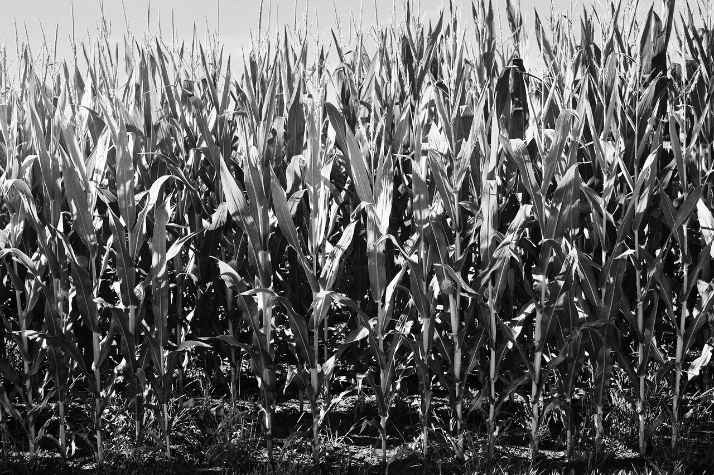
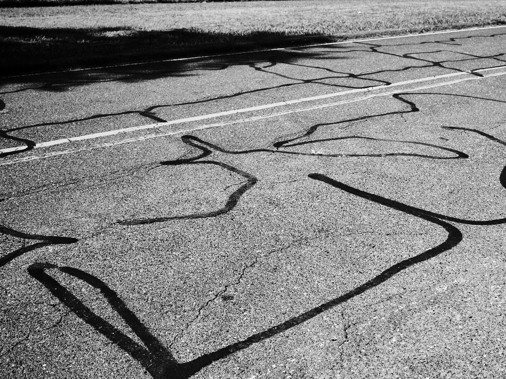

ISO Native Lands: Day 3 (Hickory↝Chapel Hill)
Today is homeward bound: a final 204 miles through Central North Carolina. There are a couple of locations of historical interest that I have plans to stop by: The Trading Ford, Sapona, and the Keyauwee village. I'm not keeping my hopes up too high, though, as the exact locations of each are murky and possibly on private property.
Wanting to get as much distance as possible before the evil day star becomes intolerable, I set my sights on breakfast in Salisbury, 54 miles away. That's about the maximum distance I'll ride anyways on rural highways before recharging the scooter: ABetterRoutePlanner says I'll arrive downtown with a 13% charge. The plan is to park & walk to breakfast: though apparently, the only breakfast option on a Sunday morning in Salisbury is Waffle House.
I decide to make an attempt to stretch the range out as far as I can this morning: this means easing the throttle, going just below the speed limit, pulling out when folks show up behind me, and coasting to a stop using the regenerative "engine" braking rather than applying the brakes. Thankfully, country roads are plenty quiet at 7am on a Sunday morning.

Much of this first leg is in the vicinity of Statesville, NC. The scene is ranch houses, monstrous industrial buildings, semi-truck trailers, small rural churches, and corn. This area is known for cheap land, power, and water, so it makes sense to see all the big-named companies with multiple entrances, but it still feels unlike anywhere else I've been on this trip.
Depressingly, I began to think about how the local population lives their lives as slaves to these giant faceless corporations: you spend your 40 hours a week in a giant box following orders from your company, then you visit the church on the weekend to get orders from someone else, go home to rest, and then you die. I realized that I had just summarized my own life and felt even more solemn after that.
I arrive at the first charger with 22% charge left - 9% more than I would have usually expected and worth about an extra 6 miles in range. It's good to know that I can dial up the efficiency if needed, which has led me to a new EV mantra of "Get low? Go slow".
Salisbury, or more specifically Gateway Park, is the first place I've parked my bike where things felt sketchy enough to bring my things with me instead of just concealing the side bag. To the left of me were two people packing their belongings into a shopping cart, and to the right was someone sleeping in a bus shelter curled up against a Huffy bike from the 90s. Salisbury has fallen a long way since Andrew Jackson practiced law here.
Even at 8:30am, it's beginning to feel sticky outside. The food at the Waffle House is good but not great. I was not feeling the Salisbury vibe and questioned whether it was wise to leave my motorcycle jacket and airbag vest behind, so I cut my urban exploration short and headed out to find the Trading Ford.
The ford was an important part of the Great Trading Path that went up and down the coast: used by natives and colonists alike. In this area, the Yadkin was generally 1000-1500 feet wide, and this was the only point where it was possible to cross over by foot or horseback. Unfortunately, the location of the ford has since been dammed, and while you can kind of see where it once was from I-85, the closest access is blocked off by a power plant:
I also tried to get to the location of Sapona, a famous Native American town adjacent to the Trading Ford mentioned in John Lawson's explorations. Unfortunately, nothing structural remains of it, and the site is on private land. I doubt few of the locals even know that Sapona is hiding beyond these trees:
Apparently, there is still some disagreement from archeologists on which side of the river the town was on.
Lexington
Feeling dejected and unsuccessful in my day thus far, I continue up the route of the trading path from Salisbury through Spencer to Lexington. The vibe is destitute and derelict. This corridor feels filled with the people that society has left behind. It's not a surprise when I arrive in downtown Lexington and see the theme continue. Many prime real estate locations are closed, including this local Census center from 3 years ago.
Allegedly famous for its barbeque, Lexington was primarily a textile and furniture town until those duties were moved overseas. On a Sunday morning, Lexington feels mostly dead. A random guy cruising down the hill on his bike, a crazy lady wandering around screaming to herself, and a person with a maimed arm wandering aimlessly.
At some point, it's just too hot to walk around, so I find a shady bench to chill out at near the courthouse.
Surprisingly, there are no water fountains or open markets to buy water from, so I ride to a CVS on the way out to buy some water for the coming hike.
Caraway, Keyauwee: same word, different spelling
I head East toward Asheboro, hoping to find the site of the famous Keyauwee village. The site location is an unconfirmed well-kept secret among archaeologists, but it's apparently along Caraway Creek and allegedly on private land. I tried to use hints from the books I've read on the subject and Google Earth to make an educated guess. John Lawson's "A New Voyage to Carolina" (1704) described it:
Nature hath so fortified this Town, with Mountains, that were it a Seat of War, it might easily be made impregnable; having large Corn-Fields joining to their Cabins, and a Savanna near the Town, at the Foot of these Mountains, that is capable of keeping some hundred Heads of Cattle. And all this environed round with very high Mountains so that no hard Wind ever troubles these Inhabitants.
Intriguingly, Lawson also mentions that at the top of the nearby mountain is a "cave that 100 Men may fit very conveniently to dine in". I recently saw that the Caraway Creek Preserve opened up just South of the area I had identified as an armchair historian, so I decided to visit to see if it lived up to the description.
Walking down to Caraway Creek, I imagined the sounds of a bustling native village. Craftspeople building things, food cooking over an open fire, kids playing with sticks and balls.
While this location was surrounded by the low mountains of the northern Uwharrie, it didn't match the description. I couldn't shake the idea that I was off by many miles. Once I got home and did further research, I'm pretty sure I was ~2 miles too far north and that the more likely location is just below Ridges Mountain. I'll take a closer look at a future trip.
Asheboro and home
I dropped by downtown Asheboro for a late lunch and a charge. Asheboro seems reinvigorated compared to the last time I was here 20+ years ago. The downtown lot has multiple free charging stations, art studios, and restaurants. It's clean, but you can still find plenty of old brick and grit.
It's 93'F outside, so I'm walking around with what's left of my Camelbak Chill bottle, keeping myself hydrated until I find an interesting-looking place to eat. I settle on Flying Pig Food & Spirits and am quickly disarmed by a hostess who declares that I cannot come in with a water bottle. We negotiate, and she holds the bottle hostage for me at her stand while I eat.
I ordered a Dr. Pepper, water, and a "Fish Dog": fried mahi mahi in hot dog buns. It's weird but good. On the way out, I get the water in a to-go cup to refill my water bottle. I liked the place, but my interaction with the hostess made the entire visit feel awkward.
Leaving town, I pass over the Deep River by Cedar Falls and stop the bike as it just looks too gorgeous to pass up:
When I head down to the banks, a concerned father yells down to me, asking if I have any bandaids. His boy cut himself playing on the rocks. I'm glad to finally use the First Aid kit I keep handy, and even more glad that I didn't have to use it on myself.
On the country roads between Asheboro and Siler City lies miles and miles of tar snakes. It felt like I was riding through one of those suspension test tracks you see car prototypes go through.

At this point, I'm feeling done with the road. While I could just keep slogging away at these little rural roads, I'm tired, the sun is getting low, and the deer are coming out to play, so I decide to slab it home via Highway 64 & 15-501. To do so, I head to the one charger between here and Pittsboro for one last top-off: The Ford Dealership in Siler City.

It always feels awkward charging at a vehicle dealer, especially when it's not the manufacturer of your vehicle. This dealer is closed on Sundays, so it makes the experience much less weird. I add 15% to my tank, ride the last hour home, and call it a trip.
Trip Conclusion
623 miles, 3 days, 16 charging stops
On this trip, I've become very comfortable touring on the BMW CE-04 - even to the point where I've fallen in love with this surprisingly well-thought-out scooter. The only thing I can fault the scooter for is the lack of a comfortable seating position for multi-hour rides; that's the only thing my old R1150GS still gets points for.
Admittedly, the first time I rode the CE-04 a long distance, I was annoyed with all the charging stops, but I've since learned to appreciate all the forgotten small towns that topping up has taken me to. Whereas most gas stations are far from exciting walking locations, most charging stops are smack in the middle of downtown. Here is the final track for the trip:
With this trip, I finally lost my sense of range anxiety. I still charged far more often than I needed to -- on average, every 37 miles the first day compared to every 45 the last day -- I got less concerned about it over time. While I encountered no broken chargers on this trip, the occurrence is frequent enough that I'll continue to ensure I always have enough range to make it to an alternative.
I brought a lot of extra items for emergencies that never came to be: from the emergency electric jerrycan to the plethora of AC adapters, tire inflators, and other tools. Still, if I was to do it all over again, I'd do the same trip the same way.